🎞️ ویدیوهای مرتبط
ستون ویدیوهای پیشنهادی کنار پخشکننده. ویدیو به وسط صفحه میآید؛ فهرستهای پخش، گفتگوی زنده و رونوشت ویدیو سر جایشان میمانند.
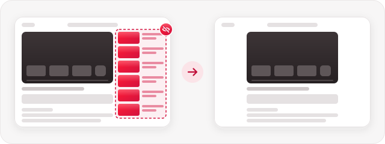
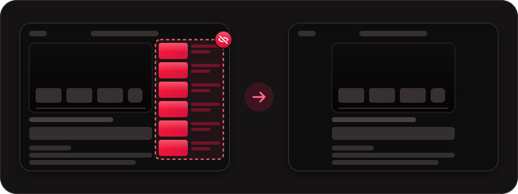
ویدیویی را که برایش آمدهاید تماشا کنید. بقیه کنار میماند.
افزونهٔ رایگان Chrome و Firefox برای یوتیوب · متنباز · بدون ردیابی · بدون وابستگی به YouTube
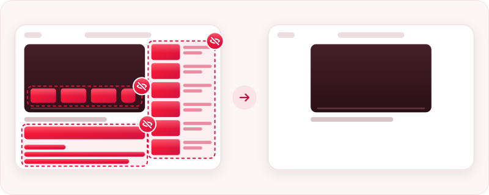
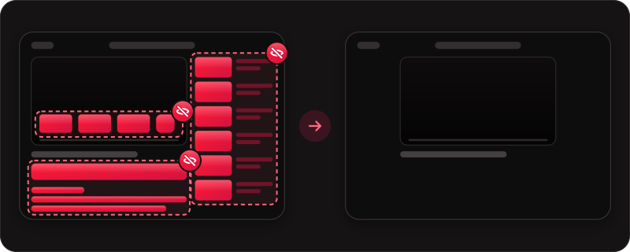
🦊 از Firefox استفاده میکنید؟ آن را با یک کلیک از Firefox Add-ons نصب کنید؛ خودش بهروز میشود. مراحل زیر برای Chrome و دیگر مرورگرهای Chromium است.
یک پوشه به دست میآید.
صفحهٔ chrome://extensions را باز کنید؛ کلیدش بالای صفحه است.
پوشهای را که از فایل فشرده بیرون آمده انتخاب کنید. همین.
📌 آن را از نماد تکهٔ پازل در نوار ابزار Chrome سنجاق کنید تا همیشه دم دستتان باشد.
هر بخش کلید خودش را دارد و هر وقت دلتان برایش تنگ شد، میتوانید آن را برگردانید.
ستون ویدیوهای پیشنهادی کنار پخشکننده. ویدیو به وسط صفحه میآید؛ فهرستهای پخش، گفتگوی زنده و رونوشت ویدیو سر جایشان میمانند.


کارتها و شبکهٔ ویدیوهای پیشنهادی که در پایان ویدیو ظاهر میشوند. شمارش معکوس پخش خودکار همچنان دیده میشود.
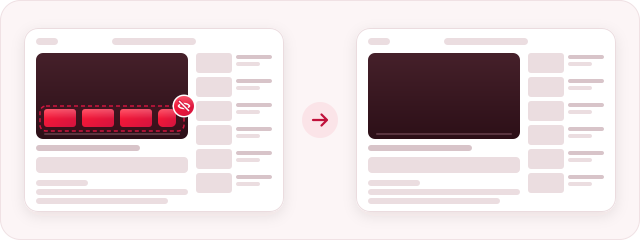
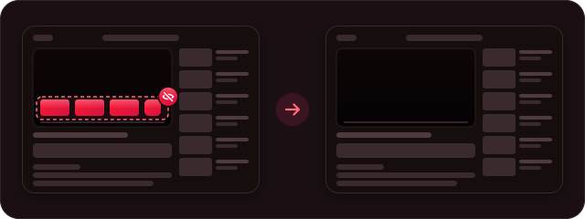
نظرهای زیر ویدیو.
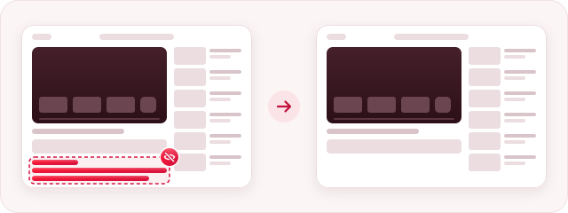
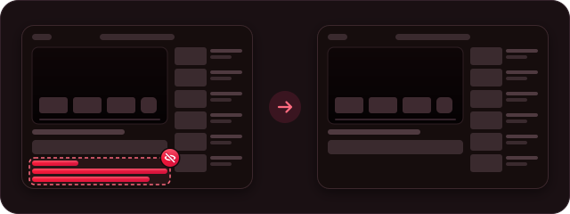
کادر زیر عنوان، با تعداد بازدید، تاریخ و توضیحات ویدیو.
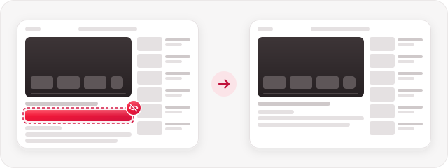
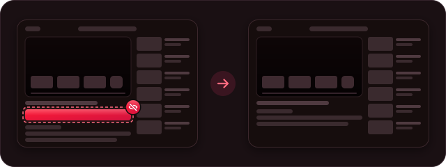
ردیفهای Shorts، تکویدیوهای Shorts در نتایج جستوجو و زیر ویدیوها، و گزینهٔ Shorts در منو.
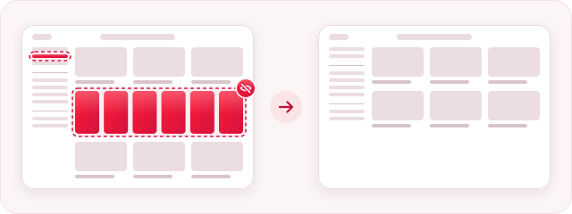
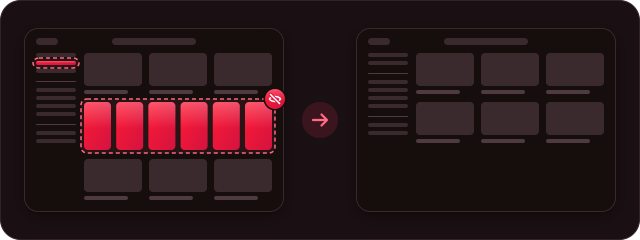
بخش کاوش در منوی کناری، و ردیف «Explore more topics» (کاوش در موضوعهای بیشتر) در صفحهٔ اصلی.
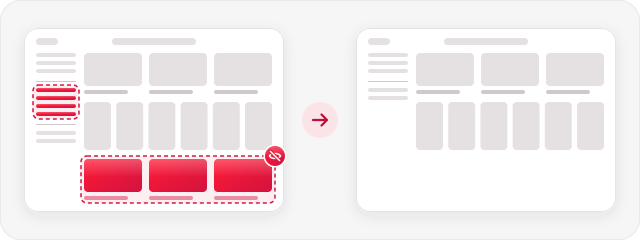
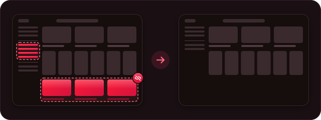
کلید اصلی (Master) سه حالت دارد: On (روشن)، Pause (مکث) و Off (خاموش). میتوانید برای ۱۵ دقیقه، یک ساعت یا تا فردا صبح مکث کنید؛ بعد خودش دوباره روشن میشود.
نشان کوچکی در گوشهٔ پایین سمت چپ YouTube میگوید چه چیزهایی کنار رفتهاند. تا موس را رویش نبرید کمرنگ میماند و روزی فقط یک بار خودش را نشان میدهد. وقتی آن را میبندید، چند ثانیه فرصت دارید پشیمان شوید؛ از پنجرهٔ افزونه هم میشود آن را خاموش کرد.
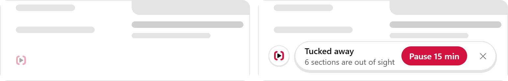
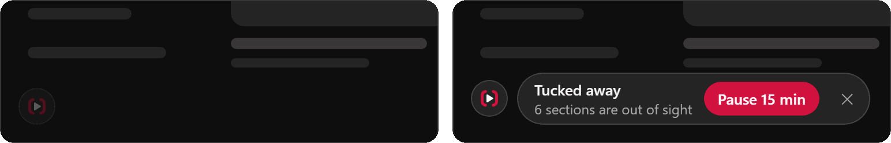
زبانهٔ Focus (تمرکز) نقشهٔ کوچکی از صفحهٔ ویدیو و صفحهٔ اصلی نشان میدهد. روی یک کاشی، یا خودِ آن بخش روی نقشه، بزنید تا کنار برود یا برگردد. Settings (تنظیمات) و About (درباره) هم فقط یک زبانه آنطرفترند.
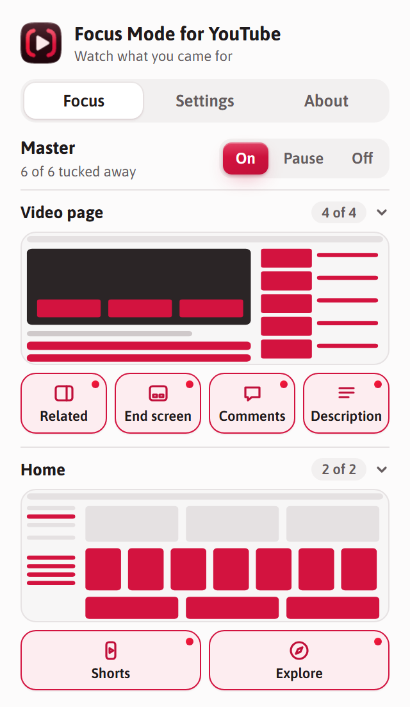
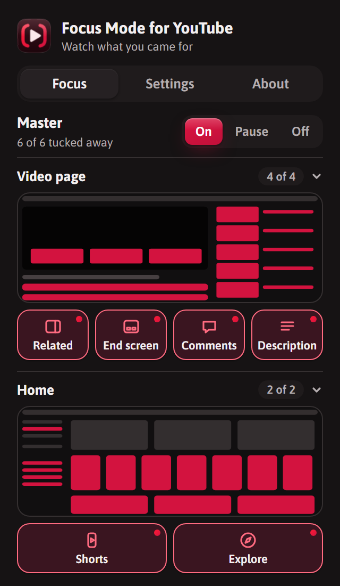
فقط روی youtube.com کار میکند، تنها اجازهاش ذخیرهٔ تنظیمات خودش است و هیچ درخواستی به شبکه نمیفرستد. چیزی ردیابی یا جمع نمیشود.
دسترسی بیشتر بهخودیخود بد نیست: ابزاری که روی همهٔ وبسایتها کار میکند، ناچار است به همهٔ آنها دسترسی بخواهد. فقط یعنی باید بیشتر به آن اعتماد کنید. ببینید انواع رایج افزونهها کجای این نردباناند.
YouTube صفحهاش را زیاد تغییر میدهد؛ برای همین گزارشهای شما این افزونه را سرپا نگه میدارد.
فایل zip جدید را دانلود کنید، آن را روی پوشهٔ قبلی باز کنید و در chrome://extensions روی Reload (بارگذاری دوباره) در کارت افزونه بزنید. تنظیماتتان سر جایش میماند، حتی اگر پوشه را جابهجا کنید یا نامش را عوض کنید.
🦊 Firefox نسخهٔ ۱۴۰ به بعد: آن را از Firefox Add-ons نصب کنید. خودش بهروز میشود.
در Chrome نسخهٔ ۱۰۷ به بعد و دیگر مرورگرهای Chromium کار میکند: Edge، Brave، Opera و Vivaldi. صفحهٔ افزونههای این مرورگرها هم همان گزینههای Developer mode و Load unpacked را دارد.
قاعدههای پنهانسازی CSS سادهاند و پیش از آنکه YouTube صفحه را نمایش دهد اعمال میشوند؛ پس چیزی حتی لحظهای روی صفحه نمیآید. اسکریپت کوچکی قاعدهٔ بخشهایی را که خواستهاید بمانند غیرفعال میکند. تغییرات بیدرنگ به همهٔ زبانههای باز YouTube میرسد و اگر همگامسازی Chrome یا Firefox Sync روشن باشد، انتخابهایتان روی رایانههای دیگرتان هم با شما میآید.
extension/ The extension: what's in the download hide.css Rules that tuck each part away content.js Switches rules off for parts you keep badge.js The quiet corner badge settings.js Loads and saves settings popup.* The popup tools/ safety-check.html The safety checker
از Pull requestها استقبال میکنیم. برای هر چیزی بزرگتر از یک اصلاح کوچک، لطفاً اول یک issue باز کنید. نسخههای جدید وقتی یک تگ نسخه push شود، خودکار ساخته میشوند.